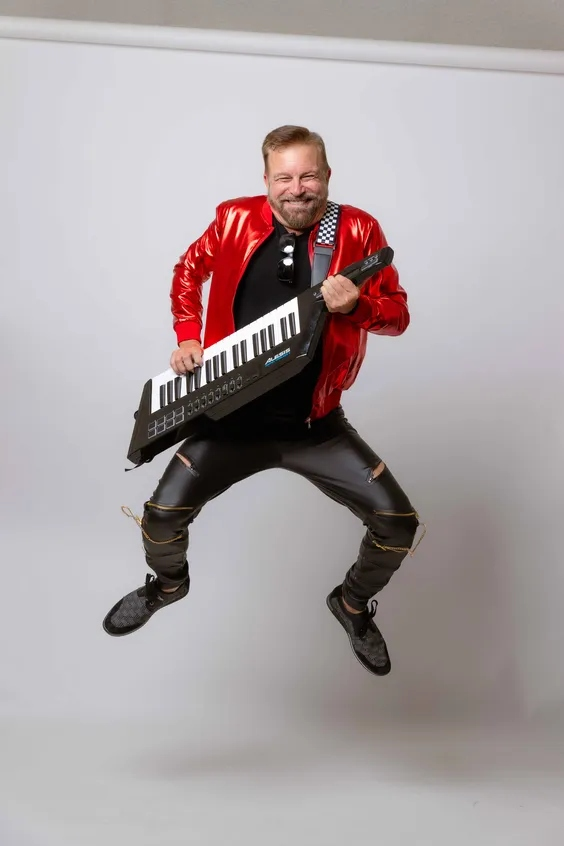
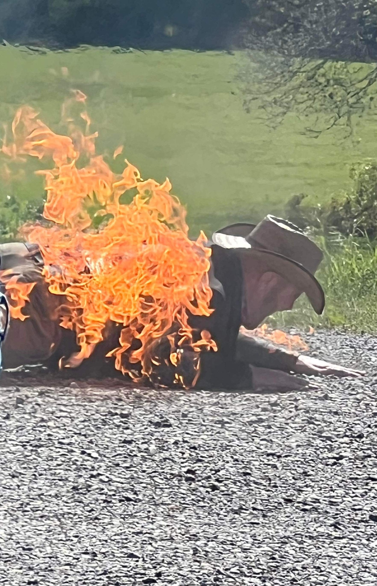
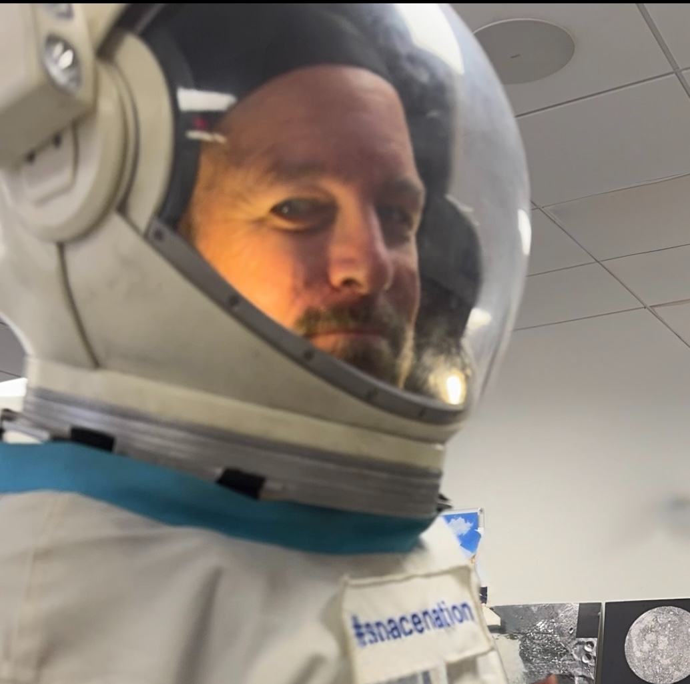
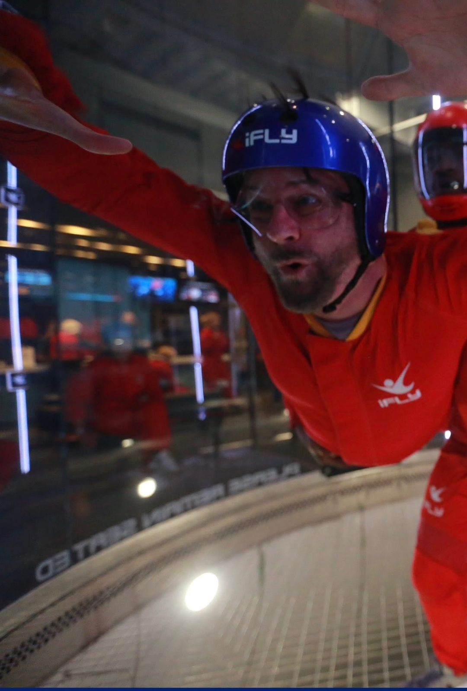
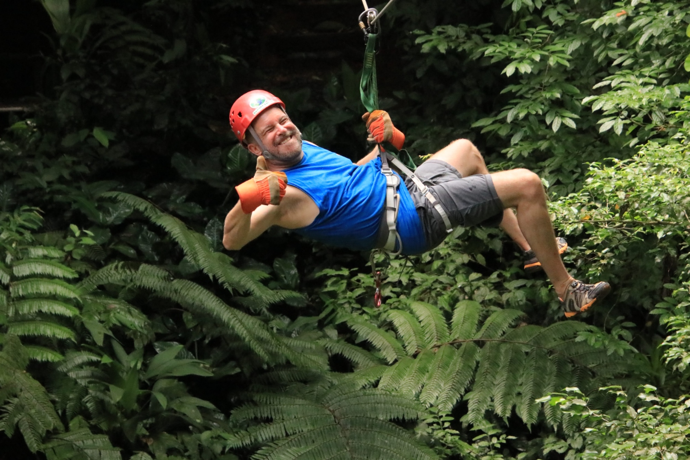

Time for other passions.
The point of a great business isn’t a bigger business. It’s a bigger life. Here’s what mine looks like on the days I’m not in a Level 10 Meeting®.

That’s a real tornado over my shoulder. I’m grinning because I’m exactly where I want to be on a Tuesday afternoon in May — eight hours from home, in the middle of nowhere, doing the thing I’ve loved since I was a kid in front of the TV during severe-weather coverage.
I’m also grinning because nobody is waiting on me. No fire to put out. No team wondering where I went. No client thinking I’ve gone dark. The business is running. I’m chasing.
That’s The EOS Life®. And it’s the entire point.
What "The EOS Life®" actually means
Gino Wickman defined The EOS Life® as five things: doing what you love, with people you love, making a huge difference, being compensated appropriately, and — the one most owners skip — having time for other passions.
That last one is where I see the most slippage. Owners I meet have built businesses that they technically own but that own them right back. They can list ten reasons they can’t step away for a week. None of those reasons are accidents. They’re the predictable output of running a business without the Six Key Components® in place.
I’m not writing this from theory. I’m writing it from a calendar that has more "other passions" on it than most people would believe.
Tornadoes, on purpose
I chase severe weather across the Southern Plains, often with the team at Tornadic Expeditions. It’s not Instagram tourism — it’s real research-grade chasing with HRRR models open on a laptop in the passenger seat, sometimes 600 miles in a day to be in the right county at the right hour.
The thing chasing requires more than anything else is the ability to leave on Monday. Not "after I finish this proposal." Not "if my team can hold things together." Leave. That’s a business-design problem, not a hobby problem. The Accountability Chart® is what solves it — when every seat is owned by the right person, "Ray’s out of pocket for three days" isn’t a crisis. It’s a Tuesday.
Keys on stage with Live Radio DFW

I play keys in Live Radio DFW, a classic-rock cover band working venues across the metroplex. Gigs are typically Friday and Saturday nights, which means Sunday is a recovery day, which means Monday morning I need to be sharp and useful to my clients.
The thing that makes that math work is the Level 10 Meeting®. One 90-minute weekly rhythm with my team forces every issue to the surface, every commitment into the open, and every Rock into a clear status. I don’t carry the business around in my head on Sunday night. I show up Monday, look at the scorecard, and know exactly where to lean in.
Stunt acting and on-set work

That’s actually me on fire. Full-body burn, controlled set, professional stunt team. I’ve done film and stunt work for the love of it — long days, weird hours, very little money, and a craft I’ll keep chasing for as long as my knees cooperate.
Film schedules are brutal and they don’t negotiate. When a production calls, you’re on their clock, not yours. The only reason I can say yes is that my business runs on a clear Vision/Traction Organizer®. My team knows the one-year plan, the quarterly Rocks, and the core values we hire and fire by. They don’t need me hovering. They need me clear.
Astronaut training, indoor skydiving, Costa Rica

I’ve done astronaut training with Space Nation in a real pressure suit. I’ve flown the wind tunnel at iFLY. I’ve zipped through the Costa Rican rainforest canopy at Tulemar with a GoPro and a grin. None of these are accidents either — they’re on a list, and the list gets shorter every year because I keep doing the things on it.


The pattern, in case it’s not obvious: a life full of "other passions" isn’t a side effect of a good business. It’s the test of one.
The honest part
I didn’t always live this way. I’ve been the owner who couldn’t step away. I’ve been the founder whose vacation involved three calls a day and a laptop on the beach. I know the feeling of looking at a calendar and realizing the only thing on it is more work.
What changed was structure, not willpower. I stopped trying to outwork the chaos and started installing a system. Right People in the Right Seats. A V/TO® the leadership team actually believes. Rocks every quarter. A scorecard we trust. Issues solved instead of carried.
Once those were in place, the calendar got real. Not "Ray takes off Friday afternoon" real — "Ray is in Oklahoma chasing a supercell and the business hits its number anyway" real.
What this means for you
If your "other passions" list is shorter than your to-do list, that’s data. It means the business is running you, not the other way around. The fix isn’t a vacation — it’s a system that makes the vacation possible without you holding everything together by force.
EOS® is that system. Not a productivity hack. Not a mindset shift. A practical set of tools your leadership team can install, run, and own — so that you can finally book the trip, take the gig, chase the storm, or do whatever your version of "tornado in the rearview mirror" turns out to be.
Want a life with more passions on the calendar?
A 90 Minute Meeting is the easiest way to see if EOS® is the right fit for your leadership team. No cost, no pressure, no slide deck. Just a conversation about what your business could look like running on EOS®.